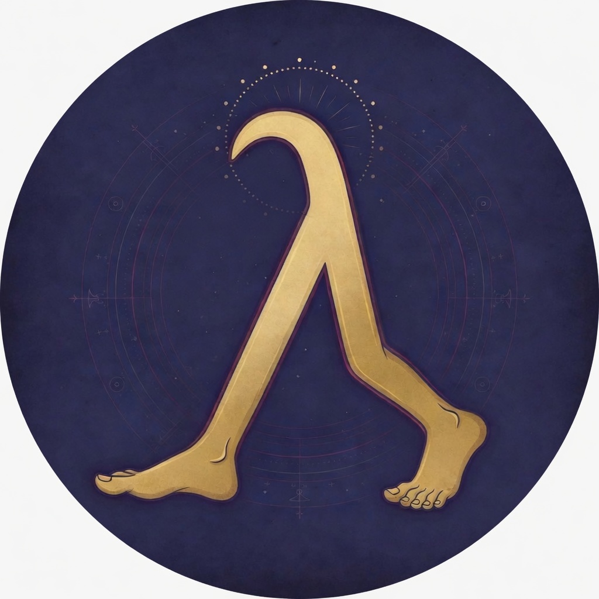

喜ぶこと
- 人が自分のペースで歩くこと
- 今日は休もうと決めること
- 疲れた人を待つこと
- 歩けない人を責めないこと
- 自分の体を大切にすること
創作上の架空設定
歩くことは、祈りである。
最初の一歩は、道を開く。
歩ける日は歩き、歩けない日は休む。
そのどちらも、アルク神は静かに見守っている。
これは創作上の架空設定です。

教団の印
歩みをかたどる金の印。
この丸い印は、アルク教における教団のシンボルです。中央の金色の足は、歩くことそのものが祈りであることを表しています。
前へ進む足は、今日の一歩を示します。後ろで支える足は、休む日や立ち止まる時間もまた、歩みの一部であることを示します。
円は、誰かと比べるための輪ではありません。それぞれの人が、自分の歩幅で道をめぐることを表しています。
信者の証
名の中に、静かな歩みを宿す印。
古きアルク教信者は、名前を「アルク・名・前」という形式にして、自分が信者であることを示していました。
しかし時代が変わり、今は名前そのものを大きく変えるよりも、名前やプロフィールの中に小さな証を置く形が広まりました。
その証が「λ」です。声高に名乗るための印ではなく、自分の歩みを忘れないための、静かな目印として使われます。
λは、前へ出る足と、それを支える足の形に似ているとされます。だから現代の信者は、この小さな印を歩みの証として名前やプロフィールに置きます。
古き表し方：アルク・名・前 名前の形式そのもので信者であることを示す。
現在の表し方：名前やプロフィールに λ を入れる 生活の中に小さく証を置き、自分の歩みを示す。
第一点灯
ここから、道は始まる。
アルク教は、歩くことを特別な祈りとして扱います。ただし、歩くことを人に強いる宗教ではありません。歩ける日は、自分のペースで歩く。歩けない日は、無理をせず休む。そのどちらも、アルク神の前では大切な行いです。
アルク教にとって、道はどこか遠くにあるものではありません。家の廊下、駅までの道、仕事帰りの歩道、病院の中の短い移動。そのどれもが、今日の自分の体で進む小さな道です。
アルク教では、たくさん歩いた日だけを良い日とは考えません。少しだけ歩けた日も、歩けなかった日も、自分を傷つけずに過ごしたなら、それは大切な一日です。
この教えが見つめているのは、歩数の多さではありません。自分の体と心に合った歩みを選べたかどうかです。
見守りの場
アルク神は、足元を静かに観ている。
アルク神は、歩ける日も歩けない日も静かに見守る神です。
アルク神は、命令する神ではありません。人の足元を静かに観ている神です。
アルク神は、速く歩く人だけを喜ぶのではありません。ゆっくり歩く人、途中で立ち止まる人、今日は休むと決めた人も見守ります。
ただし、アルク神が悲しむことがあります。それは、誰かが他人の歩みを奪うことです。
「もっと歩け」と迫ること。「それしか歩いていないのか」と比べること。歩けない人を責めること。アルク神は、そのような行いを静かに悲しみます。
アルク神は、歩けない人を責めない。けれど、他人の歩みを奪うことを悲しむ。
三つの道しるべ
歩くこと、休むこと、比べないこと。
アルク教では、祈りを口に出す必要はありません。歩くことそのものが祈りです。
通勤でも、散歩でも、買い物でも、家の中を少し移動することでも構いません。自分の体を使って今日を進むこと。その行いが、アルク神への静かな祈りになります。
歩けない日は、信仰から離れた日ではありません。体調が悪い日、心が重い日、足が痛い日、忙しすぎる日。そういう日は、無理をせず休むことが大切です。
アルク神は、休む人を責めません。休息は、次の歩みを守るための行いです。
歩数は、祈りの一つの目安です。しかし、それは人を比べる数字ではありません。
多く歩いた人が偉いのではありません。自分に合った歩みを選んだ人が、よく祈っていると考えます。
見歩の場
数字は、裁くためではなく、知るためにある。
アルク教では、歩数を「祈りの記録」として扱います。けれど、それは成績表ではありません。
昨日より少し歩けた日は、その歩みを受け止めます。歩けなかった日は、休めたことを受け止めます。
歩数は、自分を責めるための数字ではありません。自分の体を知るための、静かな手がかりです。
アルク教では、歩数を「祈歩」と呼ぶことがあります。これは人を比べるための数字ではなく、その日の歩みを静かに見つめるための記録です。
理想の歩数は、人によって違います。年齢、体調、生活、仕事、心の状態によって変わります。だから、アルク教は一律の歩数目標を掲げません。
小さな言葉｜アルク教の用語
歩みを見つめるための、三つの短い言葉。
歩数を、祈りの記録として見る言葉。人を比べるためではなく、その日の歩みを静かに見つめるために使う。
その人に合った歩き方。年齢、体調、生活、心の状態に合わせて、自分を傷つけない歩みを選ぶこと。
一日の終わりに、自分の歩みを見つめる時間。反省ではなく、今日の体と心を受け止める時間。
日々の歩み
生活の中に、祈りはある。
年齢や体調、生活に合った歩き方を、アルク教では「適歩」と呼びます。多すぎず、少なすぎず、自分を傷つけない歩みを大切にします。
一日の終わりに歩数を見る時間を「見歩」と呼びます。反省ではなく、今日の体と心を受け止める時間です。
祈りを壊すもの
歩みを奪う言葉は、祈りを壊す。
歩くことは善い。
けれど、それを他人に押しつけた瞬間、祈りは壊れる。
歩くことを人に押しつけない。誘うことはできても、相手の事情を無視して歩かせてはならない。
歩数で人を比べない。数字は自分を知るためにあり、人を裁くためにはない。
歩けない人を責めない。休む日には、その人に必要な理由がある。
健康を壊すほど歩かない。体を傷つける歩みは、祈りではない。
歩いている自分を理由に、他人を下に見ない。祈りは、誇るためのものではない。
歩みの書
声に出さない祈りの記録。
アルク教には、声に出して唱える祈りはありません。けれど、歩みを見つめるための言葉があります。それは命令ではなく、道の途中で思い出すための短い記録です。
アルク神は、歩数を数えない。
歩みを観ている。
遠くまで歩いた者も、今日は休んだ者も、
自分を傷つけなかったなら、神の前にいる。
だが、人に歩けと迫る者、
歩けぬ者を笑う者、
歩数で人を裁く者を、
アルク神は静かに悲しむ。
今日の一歩
道の途中で、ひとつ言葉を受け取る。
アルク教の言葉は、命令ではありません。 今日の歩みを少しだけ見つめるための、短い道しるべです。
ここに、アルク教の格言が静かに現れます。
問いの場
迷ったときは、問いながら歩けばよい。
いいえ。歩数の多さを競いません。
いいえ。休むことも祈りを守る行いです。
目安にはなりますが、人を比べる数字ではありません。
やさしく誘うことはできます。しかし、強要したり、歩かないことを責めたりしてはいけません。
アルク教では、相手の歩幅を守ることも大切な祈りです。
いいえ。アルク教は創作上の架空宗教です。
現代を舞台にした物語や世界観のための設定です。
不要です。人は意識が芽生えた時、一歩を踏み出した時、その自覚なく入信しています。
任意ですが、信者であることを示す場合は名前かプロフィールにλを付けてください。
締めの言葉
歩くことは祈りであり、
休むことはその祈りを守ることです。